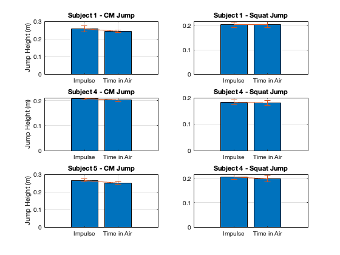

Contents
- Jumping analysis
- load the grfJump.mat
- create a function version of the zybook lab, Coding: Jumping analyses
- get heights for all trials using the do_jump_analyses you wrote
- Create a figure to help compare which jump type produced a higher jump
- Create a figure to help compare differences in approach
- Mean and Standard Deviation Calculations
Jumping analysis
close all
clearvars
clc
load the grfJump.mat
load("grfJump.mat");
create a function version of the zybook lab, Coding: Jumping analyses
[h_impulse, h_t_air] = do_jump_analyses(jumpdata) this will be a separate .m file
get heights for all trials using the do_jump_analyses you wrote
%%CM Jump %Subjet 1 [S1_CM_Imp_h_trial1, S1_CM_Tair_h_trail1] = do_jump_analyses(S1_CMJump1); [S1_CM_Imp_h_trial2, S1_CM_Tair_h_trail2] = do_jump_analyses(S1_CMJump2); [S1_CM_Imp_h_trial3, S1_CM_Tair_h_trail3] = do_jump_analyses(S1_CMJump3); [S1_CM_Imp_h_trial4, S1_CM_Tair_h_trail4] = do_jump_analyses(S1_CMJump4); [S1_CM_Imp_h_trial5, S1_CM_Tair_h_trail5] = do_jump_analyses(S1_CMJump5); %Subject 4 [S4_CM_Imp_h_trial1, S4_CM_Tair_h_trail1] = do_jump_analyses(S4_CMJump1); [S4_CM_Imp_h_trial2, S4_CM_Tair_h_trail2] = do_jump_analyses(S4_CMJump2); [S4_CM_Imp_h_trial3, S4_CM_Tair_h_trail3] = do_jump_analyses(S4_CMJump3); [S4_CM_Imp_h_trial4, S4_CM_Tair_h_trail4] = do_jump_analyses(S4_CMJump4); [S4_CM_Imp_h_trial5, S4_CM_Tair_h_trail5] = do_jump_analyses(S4_CMJump5); %Subject 5 [S5_CM_Imp_h_trial1, S5_CM_Tair_h_trail1] = do_jump_analyses(S5_CMJump1); [S5_CM_Imp_h_trial2, S5_CM_Tair_h_trail2] = do_jump_analyses(S5_CMJump2); [S5_CM_Imp_h_trial3, S5_CM_Tair_h_trail3] = do_jump_analyses(S5_CMJump3); [S5_CM_Imp_h_trial4, S5_CM_Tair_h_trail4] = do_jump_analyses(S5_CMJump4); [S5_CM_Imp_h_trial5, S5_CM_Tair_h_trail5] = do_jump_analyses(S5_CMJump5); %%Squat Jump %Subjet 1 [S1_SJ_Imp_h_trial1, S1_SJ_Tair_h_trail1] = do_jump_analyses(S1_squatJump1); [S1_SJ_Imp_h_trial2, S1_SJ_Tair_h_trail2] = do_jump_analyses(S1_squatJump2); [S1_SJ_Imp_h_trial3, S1_SJ_Tair_h_trail3] = do_jump_analyses(S1_squatJump3); [S1_SJ_Imp_h_trial4, S1_SJ_Tair_h_trail4] = do_jump_analyses(S1_squatJump4); [S1_SJ_Imp_h_trial5, S1_SJ_Tair_h_trail5] = do_jump_analyses(S1_squatJump5); %Subject 4 [S4_SJ_Imp_h_trial1, S4_SJ_Tair_h_trail1] = do_jump_analyses(S4_squatJump1); [S4_SJ_Imp_h_trial2, S4_SJ_Tair_h_trail2] = do_jump_analyses(S4_squatJump2); [S4_SJ_Imp_h_trial3, S4_SJ_Tair_h_trail3] = do_jump_analyses(S4_squatJump3); [S4_SJ_Imp_h_trial4, S4_SJ_Tair_h_trail4] = do_jump_analyses(S4_squatJump4); [S4_SJ_Imp_h_trial5, S4_SJ_Tair_h_trail5] = do_jump_analyses(S4_squatJump5); %Subject 5 [S5_SJ_Imp_h_trial1, S5_SJ_Tair_h_trail1] = do_jump_analyses(S5_squatJump1); [S5_SJ_Imp_h_trial2, S5_SJ_Tair_h_trail2] = do_jump_analyses(S5_squatJump2); [S5_SJ_Imp_h_trial3, S5_SJ_Tair_h_trail3] = do_jump_analyses(S5_squatJump3); [S5_SJ_Imp_h_trial4, S5_SJ_Tair_h_trail4] = do_jump_analyses(S5_squatJump4); [S5_SJ_Imp_h_trial5, S5_SJ_Tair_h_trail5] = do_jump_analyses(S5_squatJump5);
Height (Impulse-Momentum): 0.24173 m Height (Time in Air): 0.2374 m Height (Impulse-Momentum): 0.26751 m Height (Time in Air): 0.25164 m Height (Impulse-Momentum): 0.27348 m Height (Time in Air): 0.24283 m Height (Impulse-Momentum): 0.23298 m Height (Time in Air): 0.23632 m Height (Impulse-Momentum): 0.26207 m Height (Time in Air): 0.24392 m Height (Impulse-Momentum): 0.21029 m Height (Time in Air): 0.20815 m Height (Impulse-Momentum): 0.20871 m Height (Time in Air): 0.21221 m Height (Impulse-Momentum): 0.19963 m Height (Time in Air): 0.19327 m Height (Impulse-Momentum): 0.20404 m Height (Time in Air): 0.20513 m Height (Impulse-Momentum): 0.20858 m Height (Time in Air): 0.19718 m Height (Impulse-Momentum): 0.27615 m Height (Time in Air): 0.25835 m Height (Impulse-Momentum): 0.26448 m Height (Time in Air): 0.25386 m Height (Impulse-Momentum): 0.25157 m Height (Time in Air): 0.23632 m Height (Impulse-Momentum): 0.26913 m Height (Time in Air): 0.25386 m Height (Impulse-Momentum): 0.26583 m Height (Time in Air): 0.25498 m Height (Impulse-Momentum): 0.21193 m Height (Time in Air): 0.21528 m Height (Impulse-Momentum): 0.20071 m Height (Time in Air): 0.20413 m Height (Impulse-Momentum): 0.20797 m Height (Time in Air): 0.20916 m Height (Impulse-Momentum): 0.21284 m Height (Time in Air): 0.21528 m Height (Impulse-Momentum): 0.18591 m Height (Time in Air): 0.1846 m Height (Impulse-Momentum): 0.17248 m Height (Time in Air): 0.178 m Height (Impulse-Momentum): 0.19464 m Height (Time in Air): 0.19036 m Height (Impulse-Momentum): 0.18855 m Height (Time in Air): 0.18651 m Height (Impulse-Momentum): 0.17731 m Height (Time in Air): 0.16697 m Height (Impulse-Momentum): 0.18308 m Height (Time in Air): 0.178 m Height (Impulse-Momentum): 0.19214 m Height (Time in Air): 0.17894 m Height (Impulse-Momentum): 0.21073 m Height (Time in Air): 0.20213 m Height (Impulse-Momentum): 0.21531 m Height (Time in Air): 0.20014 m Height (Impulse-Momentum): 0.2162 m Height (Time in Air): 0.21221 m Height (Impulse-Momentum): 0.19961 m Height (Time in Air): 0.19522 m
Create a figure to help compare which jump type produced a higher jump
Use 6 subplots arranged in 3 rows for each subject (S1, S4, S5) and 2 columns for the 2 methods (impulse, time in air)
In each subplot, plot a bar graph of the average of the jump heights with error bars of the standard deviation of the jump heights.
One bar is for the CMJump and the other bar is for the squatjump
Remember to label everything so it's clear what the figure is showing
Create a figure to help compare differences in approach
Use 6 subplots arranged in 3 rows for each subject and 2 columns for the 2 jump types
In each subplot, plot a bar graph of the average jump height with error bars of the standard deviation.
One bar is for the impulse and the other bar is for the time in air
Remember to label everything so it's clear what the figure is showing
Mean and Standard Deviation Calculations
% Subject 1 - CM Jump S1_CM_Imp_heights = [S1_CM_Imp_h_trial1, S1_CM_Imp_h_trial2, S1_CM_Imp_h_trial3, S1_CM_Imp_h_trial4, S1_CM_Imp_h_trial5]; S1_CM_Tair_heights = [S1_CM_Tair_h_trail1, S1_CM_Tair_h_trail2, S1_CM_Tair_h_trail3, S1_CM_Tair_h_trail4, S1_CM_Tair_h_trail5]; S1_CM_Imp_mean = mean(S1_CM_Imp_heights); S1_CM_Imp_std = std(S1_CM_Imp_heights); S1_CM_Tair_mean = mean(S1_CM_Tair_heights); S1_CM_Tair_std = std(S1_CM_Tair_heights); % Subject 1 - Squat Jump S1_SJ_Imp_heights = [S1_SJ_Imp_h_trial1, S1_SJ_Imp_h_trial2, S1_SJ_Imp_h_trial3, S1_SJ_Imp_h_trial4, S1_SJ_Imp_h_trial5]; S1_SJ_Tair_heights = [S1_SJ_Tair_h_trail1, S1_SJ_Tair_h_trail2, S1_SJ_Tair_h_trail3, S1_SJ_Tair_h_trail4, S1_SJ_Tair_h_trail5]; S1_SJ_Imp_mean = mean(S1_SJ_Imp_heights); S1_SJ_Imp_std = std(S1_SJ_Imp_heights); S1_SJ_Tair_mean = mean(S1_SJ_Tair_heights); S1_SJ_Tair_std = std(S1_SJ_Tair_heights); % Subject 4 - CM Jump S4_CM_Imp_heights = [S4_CM_Imp_h_trial1, S4_CM_Imp_h_trial2, S4_CM_Imp_h_trial3, S4_CM_Imp_h_trial4, S4_CM_Imp_h_trial5]; S4_CM_Tair_heights = [S4_CM_Tair_h_trail1, S4_CM_Tair_h_trail2, S4_CM_Tair_h_trail3, S4_CM_Tair_h_trail4, S4_CM_Tair_h_trail5]; S4_CM_Imp_mean = mean(S4_CM_Imp_heights); S4_CM_Imp_std = std(S4_CM_Imp_heights); S4_CM_Tair_mean = mean(S4_CM_Tair_heights); S4_CM_Tair_std = std(S4_CM_Tair_heights); % Subject 4 - Squat Jump S4_SJ_Imp_heights = [S4_SJ_Imp_h_trial1, S4_SJ_Imp_h_trial2, S4_SJ_Imp_h_trial3, S4_SJ_Imp_h_trial4, S4_SJ_Imp_h_trial5]; S4_SJ_Tair_heights = [S4_SJ_Tair_h_trail1, S4_SJ_Tair_h_trail2, S4_SJ_Tair_h_trail3, S4_SJ_Tair_h_trail4, S4_SJ_Tair_h_trail5]; S4_SJ_Imp_mean = mean(S4_SJ_Imp_heights); S4_SJ_Imp_std = std(S4_SJ_Imp_heights); S4_SJ_Tair_mean = mean(S4_SJ_Tair_heights); S4_SJ_Tair_std = std(S4_SJ_Tair_heights); % Subject 5 - CM Jump S5_CM_Imp_heights = [S5_CM_Imp_h_trial1, S5_CM_Imp_h_trial2, S5_CM_Imp_h_trial3, S5_CM_Imp_h_trial4, S5_CM_Imp_h_trial5]; S5_CM_Tair_heights = [S5_CM_Tair_h_trail1, S5_CM_Tair_h_trail2, S5_CM_Tair_h_trail3, S5_CM_Tair_h_trail4, S5_CM_Tair_h_trail5]; S5_CM_Imp_mean = mean(S5_CM_Imp_heights); S5_CM_Imp_std = std(S5_CM_Imp_heights); S5_CM_Tair_mean = mean(S5_CM_Tair_heights); S5_CM_Tair_std = std(S5_CM_Tair_heights); % Subject 5 - Squat Jump S5_SJ_Imp_heights = [S5_SJ_Imp_h_trial1, S5_SJ_Imp_h_trial2, S5_SJ_Imp_h_trial3, S5_SJ_Imp_h_trial4, S5_SJ_Imp_h_trial5]; S5_SJ_Tair_heights = [S5_SJ_Tair_h_trail1, S5_SJ_Tair_h_trail2, S5_SJ_Tair_h_trail3, S5_SJ_Tair_h_trail4, S5_SJ_Tair_h_trail5]; S5_SJ_Imp_mean = mean(S5_SJ_Imp_heights); S5_SJ_Imp_std = std(S5_SJ_Imp_heights); S5_SJ_Tair_mean = mean(S5_SJ_Tair_heights); S5_SJ_Tair_std = std(S5_SJ_Tair_heights); % Subject 1 subplot(3, 2, 1); bar([S1_CM_Imp_mean, S1_CM_Tair_mean]); hold on; errorbar([1, 2], [S1_CM_Imp_mean, S1_CM_Tair_mean], [S1_CM_Imp_std, S1_CM_Tair_std]); xticks([1, 2]); xticklabels({'Impulse', 'Time in Air'}); ylabel('Jump Height (m)'); title('Subject 1 - CM Jump'); grid on; subplot(3, 2, 2); bar([S1_SJ_Imp_mean, S1_SJ_Tair_mean]); hold on; errorbar([1, 2], [S1_SJ_Imp_mean, S1_SJ_Tair_mean], [S1_SJ_Imp_std, S1_SJ_Tair_std]); xticks([1, 2]); xticklabels({'Impulse', 'Time in Air'}); title('Subject 1 - Squat Jump'); grid on; % Subject 4 subplot(3, 2, 3); bar([S4_CM_Imp_mean, S4_CM_Tair_mean]); hold on; errorbar([1, 2], [S4_CM_Imp_mean, S4_CM_Tair_mean], [S4_CM_Imp_std, S4_CM_Tair_std]); xticks([1, 2]); xticklabels({'Impulse', 'Time in Air'}); ylabel('Jump Height (m)'); title('Subject 4 - CM Jump'); grid on; subplot(3, 2, 4); bar([S4_SJ_Imp_mean, S4_SJ_Tair_mean]); hold on; errorbar([1, 2], [S4_SJ_Imp_mean, S4_SJ_Tair_mean], [S4_SJ_Imp_std, S4_SJ_Tair_std]); xticks([1, 2]); xticklabels({'Impulse', 'Time in Air'}); title('Subject 4 - Squat Jump'); grid on; % Subject 5 subplot(3, 2, 5); bar([S5_CM_Imp_mean, S5_CM_Tair_mean]); hold on; errorbar([1, 2], [S5_CM_Imp_mean, S5_CM_Tair_mean], [S5_CM_Imp_std, S5_CM_Tair_std]); xticks([1, 2]); xticklabels({'Impulse', 'Time in Air'}); ylabel('Jump Height (m)'); title('Subject 5 - CM Jump'); grid on; subplot(3, 2, 6); bar([S5_SJ_Imp_mean, S5_SJ_Tair_mean]); hold on; errorbar([1, 2], [S5_SJ_Imp_mean, S5_SJ_Tair_mean], [S5_SJ_Imp_std, S5_SJ_Tair_std]); xticks([1, 2]); xticklabels({'Impulse', 'Time in Air'}); title('Subject 4 - Squat Jump'); grid on;